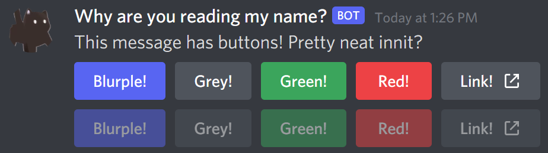
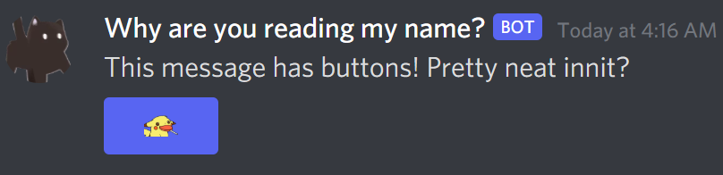

Introduction
Buttons are a feature in Discord based on the interaction framework appended to the bottom of a message which come in several colors. You will want to familarize yourself with the message builder as it and similar builder objects will be used throughout this article.
With buttons, you can have up to five buttons in a row, and up to five (5) rows of buttons, for a maximum for 25 buttons per message. Furthermore, buttons come in two types: regular, and link. Link buttons contain a Url field, and are always grey.
Buttons Continued
Warning
Component (Button) Ids on buttons should be unique, as this is what's sent back when a user presses a button.
Link buttons do not have a custom id and do not send interactions when pressed.
Buttons consist of five parts:
- Id
- Style
- Label
- Emoji
- Disabled
The id of the button is a settable string on buttons, and is specified by the developer. Discord sends this id back in the interaction object.
Non-link buttons come in four colors, which are known as styles: Blurple, Grey, Green, and Red. Or as their styles are named: Primary, Secondary, Success, and Danger respectively.
How does one construct a button? It's simple, buttons support constructor and object initialization like so:
var myButton = new DiscordButtonComponent(
ButtonStyle.Primary,
"my_very_cool_button",
"Very cool button!",
false,
new DiscordComponentEmoji("😀"));
This will create a blurple button with the text that reads "Very cool button!". When a user pushes it,
"my_very_cool_button" will be sent back as the @DSharpPlus.EventArgs.ComponentInteractionCreateEventArgs.Id property
on the event. This is expanded on in the how to respond to buttons.
The label of a button is optional if an emoji is specified. The label can be up to 80 characters in length. The emoji of a button is a partial emoji object, which means that any valid emoji is usable, even if your bot does not have access to it's origin server.
The disabled field of a button is rather self explanatory. If this is set to true, the user will see a greyed out button which they cannot interact with.
Adding buttons
Note
This article will use underscores in button ids for consistency and styling, but spaces are also usable.
Adding buttons to a message is relatively simple. Simply make a builder, and sprinkle some content and the buttons you'd like.
var builder = new DiscordMessageBuilder();
builder.WithContent("This message has buttons! Pretty neat innit?");
Well, there's a builder, but no buttons. What now? Simply make a new @DSharpPlus.Entities.DiscordButtonComponent object and call @DSharpPlus.Entities.DiscordMessageBuilder.AddComponents* on the message builder.
var myButton = new DiscordButtonComponent(ButtonStyle.Primary, "my_custom_id", "This is a button!");
var builder = new DiscordMessageBuilder()
.WithContent("This message has buttons! Pretty neat innit?")
.AddComponents(myButton);
Now you have a message with a button. Congratulations! It's important to note that @DSharpPlus.Entities.DiscordMessageBuilder.AddComponents* will create a new row with each call, so add everything you want on one row in one call!
Buttons can be added in any order you fancy. Lets add 5 to demonstrate each color, and a link button for good measure.
var builder = new DiscordMessageBuilder()
.WithContent("This message has buttons! Pretty neat innit?")
.AddComponents(new DiscordComponent[]
{
new DiscordButtonComponent(ButtonStyle.Primary, "1_top", "Blurple!"),
new DiscordButtonComponent(ButtonStyle.Secondary, "2_top", "Grey!"),
new DiscordButtonComponent(ButtonStyle.Success, "3_top", "Green!"),
new DiscordButtonComponent(ButtonStyle.Danger, "4_top", "Red!"),
new DiscordLinkButtonComponent("https://some-super-cool.site", "Link!")
});
As promised, not too complicated. Links however are @DSharpPlus.Entities.DiscordLinkButtonComponent, which takes a URL as its first parameter, and the label. Link buttons can also have an emoji, like regular buttons.
Lets also add a second row of buttons, but disable them, so the user can't push them all willy-nilly.
builder.AddComponents(new DiscordComponent[]
{
new DiscordButtonComponent(ButtonStyle.Primary, "1_top_d", "Blurple!", true),
new DiscordButtonComponent(ButtonStyle.Secondary, "2_top_d", "Grey!", true),
new DiscordButtonComponent(ButtonStyle.Success, "3_top_d", "Green!", true),
new DiscordButtonComponent(ButtonStyle.Danger, "4_top_d", "Red!", true),
new DiscordLinkButtonComponent("https://some-super-cool.site", "Link!", true)
});
Practically identical, but now with true as an extra paremeter. This is the
@DSharpPlus.Entities.DiscordButtonComponent.Disabled property.
Produces a message like such:

Well, that's all neat, but lets say you want to add an emoji. Being able to use any emoji is pretty neat, afterall. That's also very simple!
var myButton = new DiscordButtonComponent(
ButtonStyle.Primary,
"emoji_button",
null,
false,
new DiscordComponentEmoji(595381687026843651));
And you're done! Simply add that to a builder, and when you send, you'll get a message that has a button with a little Pikachu enjoying a lolipop. Adorable.

Responding to button presses
When any button is pressed, it will fire the @DSharpPlus.DiscordClient.ComponentInteractionCreated.
In the event args, @DSharpPlus.EventArgs.ComponentInteractionCreateEventArgs.Id will be the id of the button you specified. There's also an @DSharpPlus.EventArgs.InteractionCreateEventArgs.Interaction property, which contains the interaction the event created. It's important to respond to an interaction within 3 seconds, or it will time out. Responding after this period will throw a @DSharpPlus.Exceptions.NotFoundException.
With buttons, there are two new response types: @DSharpPlus.InteractionResponseType.DeferredMessageUpdate and @DSharpPlus.InteractionResponseType.UpdateMessage.
Using @DSharpPlus.InteractionResponseType.DeferredMessageUpdate lets you create followup messages via the followup message builder. The button will return to being in it's 'dormant' state, or it's 'unpushed' state, if you will.
You have 15 minutes from that point to make followup messages. Responding to that interaction looks like this:
client.ComponentInteractionCreated += async (s, e) =>
{
await e.Interaction.CreateResponseAsync(InteractionResponseType.DeferredMessageUpdate);
// Do things.. //
}
If you would like to update the message when a button is pressed, however, you'd use @DSharpPlus.InteractionResponseType.UpdateMessage instead, and pass a @DSharpPlus.Entities.DiscordInteractionResponseBuilder with the new content you'd like.
client.ComponentInteractionCreated += async (s, e) =>
{
await e.Interaction.CreateResponseAsync(
InteractionResponseType.UpdateMessage,
new DiscordInteractionResponseBuilder()
.WithContent("No more buttons for you >:)"));
}
This will update the message, and remove all the buttons. Nice.
Interactivity
Along with the typical @DSharpPlus.Interactivity.InteractivityExtension.WaitForMessageAsync*and @DSharpPlus.Interactivity.InteractivityExtension.WaitForReactionAsync* methods provided by interactivity, there are also button implementations as well.
More information about how interactivity works can be found in the interactivity article.
Since buttons create interactions, there are also two additional properties in the configuration:
- @DSharpPlus.Interactivity.InteractivityConfiguration.ResponseBehavior
- @DSharpPlus.Interactivity.InteractivityConfiguration.ResponseMessage
@DSharpPlus.Interactivity.InteractivityConfiguration.ResponseBehavior is what interactivity will do when handling something that isn't a valid valid button, in the context of waiting for a specific button. It defaults to @DSharpPlus.Interactivity.Enums.InteractionResponseBehavior.Ignore, which will cause the interaction fail.
Alternatively, setting it to @DSharpPlus.Interactivity.Enums.InteractionResponseBehavior.Ack will acknowledge the button, and continue waiting.
Respond will reply with an ephemeral message with the aforementioned response message.
@DSharpPlus.Interactivity.InteractivityConfiguration.ResponseBehavior only applies to the overload accepting a string id of the button to wait for.